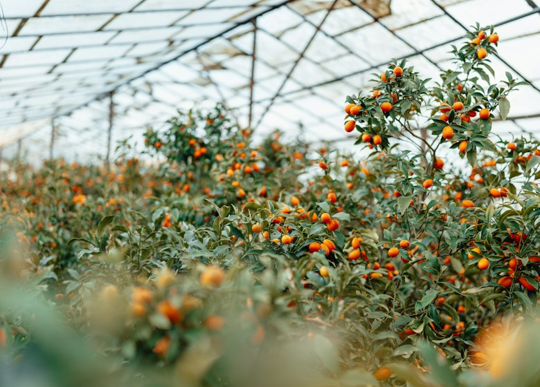
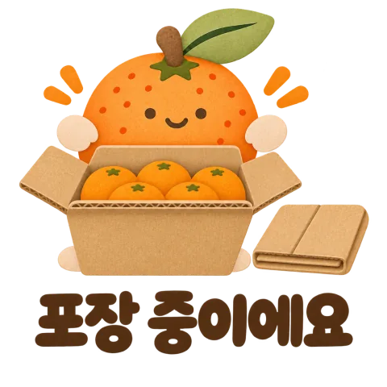
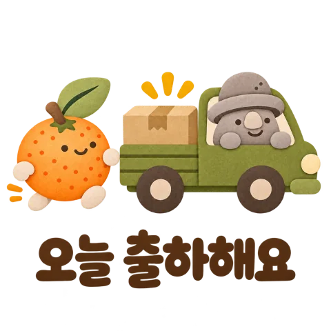
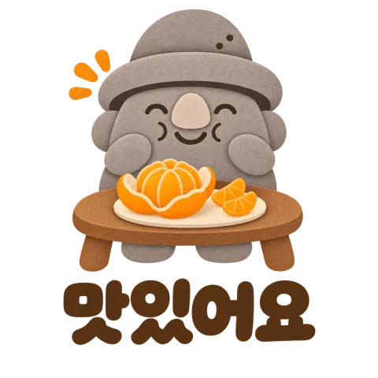

A · 게시물별 카드
글 아래에 이모티콘을 넣고, 소식마다 카드를 만듭니다.
판매 중 1개 · 하우스 감귤 5kg / 10kg 29,000원~
11월 24일 화요일
오늘 아침 귤밭이에요.
햇살이 좋아 수확하기 딱 좋은 날이네요.

오늘 수확한 귤, 상처 나지 않게
하나씩 꼼꼼히 포장하고 있어요.

오늘 예약 물량 모두 출하했어요!
도착하면 맛있게 드시고 소식 들려주세요.

♧ 농가만 봐요
오후 4:12
출하 소식 감사해요!
지난번 귤도 정말 맛있었어요.

카드마다 좋아요·답장. 각 소식의 구분이 선명합니다.
B · 하루치 한 카드
농가 정보는 한 번, 게시 시각으로 안에서 나눕니다.
판매 중 1개 · 하우스 감귤 5kg / 10kg 29,000원~
11월 24일 화요일
2026. 11. 24.소식 3개
오전 9:00
오늘 아침 귤밭이에요.
햇살이 좋아 수확하기 딱 좋은 날이네요.
오후 12:30
오늘 수확한 귤, 상처 나지 않게
하나씩 꼼꼼히 포장하고 있어요.
오후 4:00
오늘 예약 물량 모두 출하했어요!
도착하면 맛있게 드시고 소식 들려주세요.
♧ 농가만 봐요
오후 4:12
출하 소식 감사해요!
지난번 귤도 정말 맛있었어요.
농가의 같은 날 소식만 묶었습니다. 비공개 소비자 답장은 카드 밖에 둡니다.
이 시안은 하루 카드에 반응 버튼 한 줄을 둔 버전입니다.